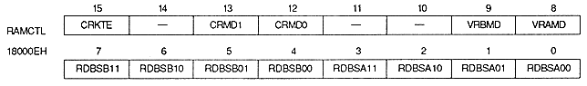

Color RAM coefficient table bit : Color RAM coefficient table enable bit (CRKTE), bit 15
* When the CRKTE bit is set to 1, set the color RAM mode to mode 1. At that time, the second half of the color RAM (100800H to 100FFFH) is used for coefficient table data, so color data cannot be stored.
VRAMD | 18000EH | bit 8 | for VRAM-A |
VRBMD | 18000EH | bit 9 | for VRAM-B |